上行 ザウ⤴モㇰ→ 【上行】
[動詞] 上る、昇る、登る、上昇する
[動詞] 勝利する、勝利者となる
ソウ→ 【散】
[動詞] 散る、命を落とす
[状態動詞] 散らかっている
 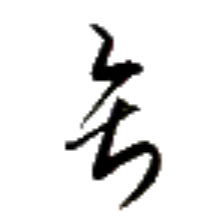
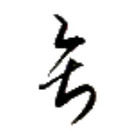
ヨウ· 【王】
[名詞] リーダー、君主、教皇、首相、大統領、首長、(セッカイクの)王
清王謝石 リン·ヨウ·クアイ→ズュー⤴ 【清王謝石】
[成句] （リン王が、石につまづいて転んだ際に、自分の身を気にかけるのでなく自身が蹴った石に謝罪したという逸話から）高貴だが威張らない様子。
官定 ユー→ホァㇷ゚→ 【官定】
[連体詞] 公式に定められた、標準の
政府の関与の有無に関わらず用いることができる。
官民 ユー→ビアー→ 【官民】
[名詞] 役人と民衆、政府と民衆
[名詞] あらゆる社会階層の人々
官民迷 ユー→ビアー→バウ⤴ 【官民迷】
[主語＋動詞] 統一の規範が無く、何を採用すべきか役人も民衆も戸惑っている様子。
何か規則や規範などの統一化を図るときに、毎回のように登場する決まり文句。
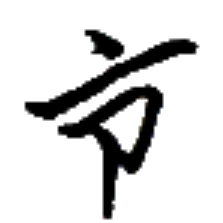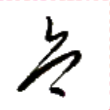
リン· 【清】
[状態動詞] 欠陥がなく美しい、清潔である
[名詞] リン（人名）
清王謝石 リン·ヨウ·クアイ→ズュー⤴ 【清王謝石】
[成句] （リン王が、石につまづいて転んだ際に、自分の身を気にかけるのでなく自身が蹴った石に謝罪したという逸話から）高貴だが威張らない様子。
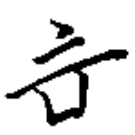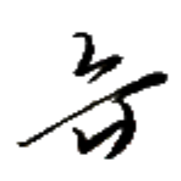
トゥㇺ→ 【甘】
[状態動詞] (味が)甘い
[状態動詞] かわいい
 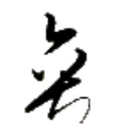
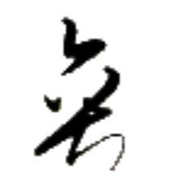
カイㇳ· 【善】
[状態動詞] 良い、申し分ない
[間投詞] はい、そうです
[副詞] 上手に
善日 カイㇳ→キアー· 【善日】
[間投詞] おはようございます、こんにちは
声調の変化に注意。
心善 ヒアー→カイㇳ· 【心善】
[状態動詞] 幸せである、喜んでいる、好きである
[節要求動詞] ～することが好きである
[間投詞] ありがとう
新星善来 ルー⤴ペゥㇳ⤴カイㇳ·ザㇰ⤴ 【新星善来】
[間投詞] あけましておめでとう
[間投詞] お誕生日おめでとう
 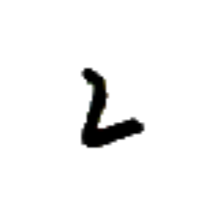
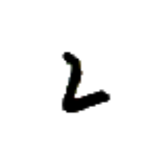


 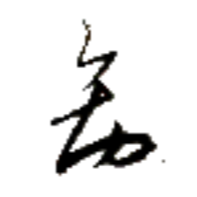
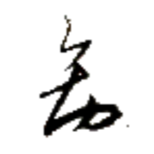